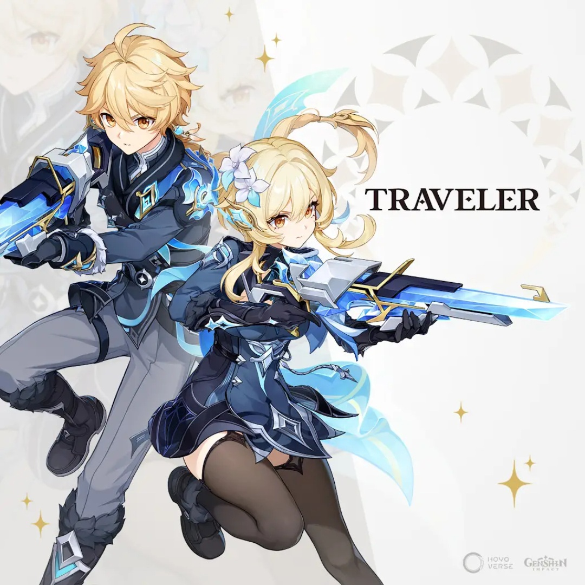
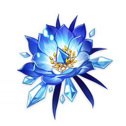
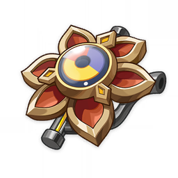

SANDS
ATK%
GOBLET
ATK% (No Cryo%)
CIRCLET
CRIT DMG / Rate

The Cryo Traveler bears an exceptionally solid baseline and long-term relevance across the Snezhnaya meta landscape. Armed with access to both Stellar-Swirl and Stellar-Conduct, the story-acquired Exaiphanes Blade, and self-sufficient reaction triggers, this variant stands out as the most futureproofed element in the Traveler's kit.
Elemental Burst (Frostbound Javelin) takes the highest priority for its massive nuke scaling that consumes Frostglow stacks. Normal Attacks follow for infused Cryo slashes (buffed by 80% ATK under A1), while Elemental Skill is leveled last for aura deployment.
| Stat Metric | Target Threshold | Justification |
|---|---|---|
| ATK | 2,400+ | Vital scaling foundation for Stellar-Conduct and A2 Passive conversion. |
| Energy Recharge | 125% ~ 145% | Guarantees Burst availability every rotation (eased further by C1). |
| CRIT Rate | 70% | Balanced 1:2 CRIT ratio baseline for consistent Cryo slash ticks. |
| CRIT DMG | 140%+ | Primary scaling stat across Circlet and artifact substats. |
| Elemental Mastery | 150 ~ 200 | A2 (Lucent Ice) converts 8% ATK into up to +160 bonus EM. |



 Odette
Cryo Core
Odette
Cryo Core
 Yae Miko (C1)
Yae Miko (C1)
 Beidou
Beidou
 Qiqi / Diona
Qiqi / Diona
In best-case scenarios, Traveler pairs with Odette, Yae Miko, and Alyosha due to their massive off-field Stellar-Conduct contributions. Alternatives: Beidou (RES Shred), Qiqi (Solid Conduct & healing), or Diona (Shielding & EM).
Odette
Glimmer Core
 Mizuki
On-Field Driver
Mizuki
On-Field Driver
 Sucrose
Sucrose
In Stellar-Swirl comps, Traveler serves as a Sub-DPS and Cryo application engine. Mizuki acts as the on-field driver to trigger Swirls, while Sucrose (or Faruzan) provides party-wide EM scaling.
| Tier | Name | Rating | Combat Mechanics & Unlocked Value |
|---|---|---|---|
| C1 | Somber Freeze | ★★★☆ | Regenerates 5 Elemental Energy whenever dealing Stellar Glimmer DMG (can trigger once every 0.5s), drastically solving ER requirements. |
| C2 | Frostfall Reverberation | ★★★☆ | Increases active character's EM by 60 on Skill hit; increases to +120 EM upon triggering or dealing Stellar Glimmer reaction DMG. |
| C3 | Glacial Shard | ★★☆☆ | Increases Elemental Burst (Frostbound Javelin) Level by 3. |
| C4 | Enduring Ice | ★★★☆ | Increases the duration of the Frostpierce Star by +25%, ensuring higher Cryo infusion uptime and continuous coordinated strikes. |
| C5 | Bittercold Fog | ★★☆☆ | Increases Elemental Skill (Ice Fog Piercer) Level by 3. |
| C6 | Brumal Grimfrost | ★★★ (GOD TIER) | Consuming Frostglow stacks during Burst buffs party-wide Stellar Glimmer reaction DMG by 5% per stack for 15s (up to +40% teamwide buff). |